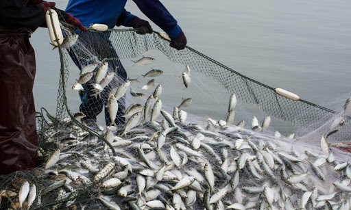

Oceans provide at least a sixth of the animal protein people eat. Living oceans absorb carbon dioxide from the atmosphere and reduce climate change impacts. The diversity and productivity of the world's oceans is a vital interest for humankind. Our security, our economy, our very survival all require healthy oceans.

About Fish
All fish share two traits: they live in water and they have a backbone—they are vertebrates.Apart from these similarities, however, many of the species in this group differ markedly from one another. Fin fish like salmon have gills, are covered in scales, and reproduce by laying eggs. Eels, by contrast, have worm-like bodies and exceedingly slimy skin. Lungfish gulp air. Whale sharks, the largest fish, give birth to live young and eat only tiny fish, squid, and plankton. Some species, such as the weedy sea dragon, are so bizarre they seem almost unreal.Fish have developed special senses, too. Because water transmits sounds, disperses chemicals, and conducts electricity better than air, fish rely less on their vision and more on their hearing, taste, and smell. Many can detect motion in the water using a special row of scales with sensors known as the lateral line. Others can find their prey and even navigate by detecting electrical charges.One reason fish are so diverse is that 70 percent of the planet is covered in water. The animals in this group live in a variety of habitats ranging from coral reefs and kelp forests to rivers, streams, and the open ocean. Another is that fish are very old on the evolutionary scale. According to fossil records, they have been on Earth for more than 500 million years! The total number of living fish species—about 32,000— is greater than the total of all other vertebrate species (amphibians, reptiles, birds, and mammals) combined.
From the National Geographic book, Animal Encyclopedia, 2012

Betta Fish: The Dazzling Siamese Fighting Fish
Betta fish, also called Siamese fighting fish, are small, colorful fish that are native to Southeast Asia and common in the pet trade. In Thailand, people call betta fish "pla kat," which means "fighting fish," and it couldn't be a more appropriate name. Male bettas are known fighters, aggressively flaring their gill covers and nipping at the fins of other males (or even females) who get too close. In the wild, fights may last only 15 minutes, but people in Thailand have bred bettas that are capable of fighting for hours.
The sea is running out of fish, despite nations’ pledges to stop it
As global fish stocks that feed hundreds of millions of people dwindle, nations are scrambling to finalize by year’s end an international agreement to ban government subsidies that fuel overfishing.Yet as negotiations at the World Trade Organization resume this week in Geneva, Switzerland, new research shows that governments have actually increased financial support for fishing practices that decimate marine life, despite public pledges to curtail such handouts.In an exhaustive survey of 152 countries, scientists at the University of British Columbia found that ocean-faring nations spent $22 billion on harmful subsidies in 2018, or 63 percent of the total amount expended to support the global fishing industry.

Giant, Weird-Looking Fish With 'Startled' Eyes Washes Up on Aussie Beach
When a group of Aussies spotted the behemoth on the beach, they initially thought it was a rugged piece of driftwood. Upon closer inspection, however, they realized it was the body of an enormous, bony fish.That's how they came face to face with the mighty ocean sunfish, known to scientists as the Mola mola. These fish can grow up to 11 feet (3.3 meters) long and weigh up to 2.5 tons (2.2 metric tons), according to National Geographic.Linette Grzelak, whose partner, Steven Jones, sent her a photo of the dead fish, related that he "said it was extremely heavy and the skin felt hard and leathery like a rhinoceros." [In Photos: The World's Largest Bony Fish]